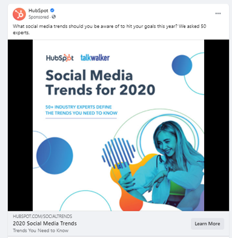
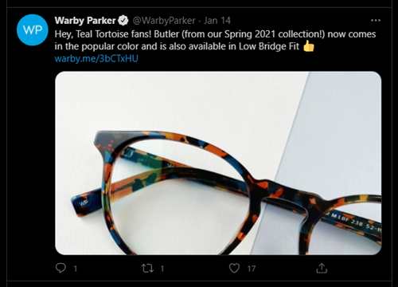
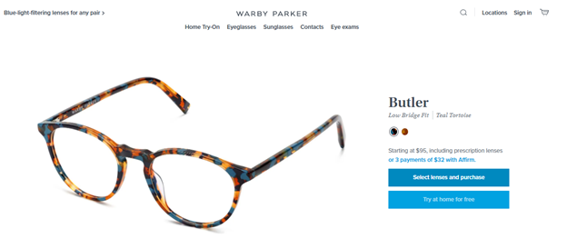
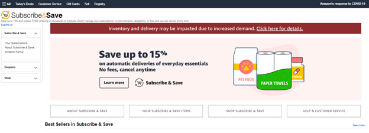
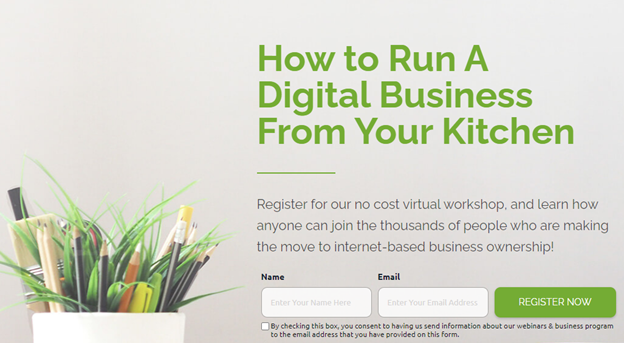

Almost all internet users frequent some form of social media nowadays. Baby boomers, millennials, Generation Z, you name it – they’re all on social networks. If you’re running a business, it would be a mistake to not leverage social media’s reach for your marketing campaigns.
But for you to maximize the benefits of your social media campaign, you need to know how to run it the right way. That means coming up with a social media marketing plan first. And for that plan to be effective, it should involve using this critical element: the social media landing page.
What is a Social Media Landing Page?
But let’s back up a bit. What exactly is a social media landing page?
Simply put, a landing page is where people who click on your link “land”. It is a stand-alone page on your website created to get people to take your desired action. That desired action might include signing up for your mailing list, registering for an event, or making a purchase.
A social media landing page, then, is where people “land” when they click your link in a social media post. Marketers use social media landing pages in both paid and organic marketing campaigns. So people clicking on your company’s social media post about the latest sale or an upcoming webinar will land on the right page for that campaign.
Why Should You Use One?
Social media landing pages are critical to the success of your campaign for many reasons. Here are the things a social media landing page can do for you and your business:
Improves Brand Awareness
Consistency is vital to any social media campaign. That’s because you want people to know they’re interacting with the same brand when they move from a social media post to the landing page. If they get confused or encounter conflicting messages, they will leave without taking the desired action.
In other words, the social media landing page should mirror the original content. A social media landing page mirrors the original content if it contains aligned messaging and matching design elements such as the brand logo, brand name, color palette, and imagery.
Here’s an example of a Facebook ad:

And this image below is the social media landing page you’re directed to when you click on the ad:
Since the critical brand elements are there on the landing page, we can say the social landing page improves brand awareness. According to Investopedia, brand awareness is the degree of consumer recognition of a product or company by its name. It is vital to your business’ success.
Boosts Online Shopping
Social media landing pages boost online sales because they make it quick and easy for people to buy from you. A social media landing page gives a clear call to action and a simple way to follow it. Check out this example from the Twitter account of Warby Parker:

When you click on the above post that aims to promote the company’s Butler glasses, you get to this social media landing page:

Notice that you can only do one of two things on the page. “Select lenses and purchase” or “try at home for free”. If you want to make a purchase, you choose the first option. If you’re still not convinced, you select the second option, but that will likely lead to you still buying the glasses because you can see how good you look wearing them.
In other words, Warby Parker’s social media landing page has one aim: to get you to make a purchase.
Targeted pages fare well when it comes to conversions. Truelist said these pages could increase conversions to up to 300%! Imagine if people were sent to a homepage instead. They’d have to search the entire e-commerce website for the product they’d just seen on social media. Customers are busy people. If you make things too difficult, they will likely give up and leave your site without taking action.
Creates Targeted Coupons and Offers
You can also use your social media landing page to give targeted coupons and offers aimed at achieving a specific goal, such as selling more of a particular product or growing your email list.
The page should give specific instructions on how customers can take advantage of the offer. Amazon, for example, devoted an entire social media landing page to its Subscribe and Save offer:

Buyers can save up to 15% off Amazon products and receive free shipping. All the calls to action on the page are related to this particular offer.
This relates to the ease and simplicity we discussed above. If you show people exactly how to take advantage of your coupons and offers, you’ll increase your chances of getting them to take your desired action.
Promotes Your Events or Webinars
Your social media landing page can also help you promote your events, such as conferences and webinars. According to Sage World, you should host webinars and events for several reasons:
● They develop authority and trust.
● They create brand awareness.
● They help you understand your target audience.
● They generate leads.
● They are convenient and affordable.
In other words, hosting webinars and events helps your business grow and thrive.
Your social media page must contain all the details prospects need to know about the event. You can also include a registration form so they can sign up immediately. That is precisely what Dale Stephen Media Marketing, a company that sells digital marketing services, does:

With social media landing pages, you can plan your events and webinars properly and maximize sign-ups. You can generate leads you can nurture and turn into paying customers, too.
Drives More Product Trials and Demos
If you’re selling software, you will have to get people to try out your product or give them a demo. According to Demodesk, the demo is the most crucial part of the software sales process. That’s because it often means the difference between closing a deal and losing a prospect. Social media is a great way to drum up interest in your product and encourage people to sign up for a demo.
But instead of directing prospects to your homepage, bring them to a social media landing page. With a targeted social media landing page, you can allow prospects to register for a demo in seconds.
Be careful not to include too many fields on the form, though. Keep it short and simple. Remember, you have to make everything as easy as possible for your potential buyers. That’s the only way you can get them to convert.
In closing
Businesses cannot afford to ignore social media’s reach. Social media campaigns should, therefore, already be part and parcel of any good marketing strategy. And at the heart of a great social media campaign is the social media landing page.
Social media landing pages can help your business in many ways. They work because they give specific instructions on how to take your desired action. You can use them to boost sales from online shopping, provide offers and coupons, and drive sign-ups for your webinars or events. You can also grow your mailing list and invite prospects to register for a product demo. On top of all of that, social media landing pages improve brand awareness, too.
The bottom line is that social media landing pages are critical to getting the most out of your social media marketing efforts. Good luck!
About the Author
Jimmy Rodriguez is the COO of Shift4Shop, a completely free, enterprise-grade e-commerce solution. He’s dedicated to helping internet retailers succeed online by developing digital marketing strategies and optimized shopping experiences that drive conversions and improve business performance.
Leave a Reply